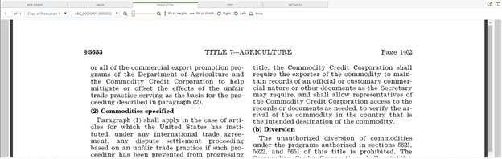
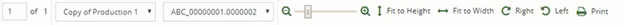
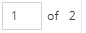
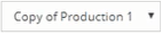
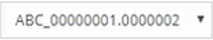
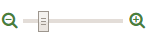
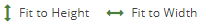
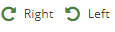
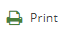

Tip: If necessary, enlarge the Document View window to view the entire toolbar.
If only one production document set is available, the production image from that set will display. If multiple sets exist, the most recently produced will display. If multiple document sets exist, then by default, the first time you access the Production tab, the production image from the first (most recently produced) set available will display. If no image is available in that set, then
A message displays if no production image is available from any production set.

|
|
Tip: If necessary, enlarge the Document View window to view the entire toolbar. |


displays the current page and total number of pages in the document. To move to a specific page in the document, enter the page number in the box. Use the arrows located on either side of the image to move to the previous page or the next page.
Click

to choose a different production.
Click

to navigate to a different page in the production or use the arrows located on either side of the production image to move to the previous page or the next page.
Use the zoom slider

to increase or decrease the document size. Position the mouse pointer over the slider to view the current percentage size. The mouse scroll wheel can also be used to adjust the document size.
Click

to fit image to the width or height of the view window. Also resets the zoom percentage back to the default settings for the width or the height.
To rotate the image in 90 degree increments, either right or left, click

.
Click

to display the Print window. Select the desired print options.